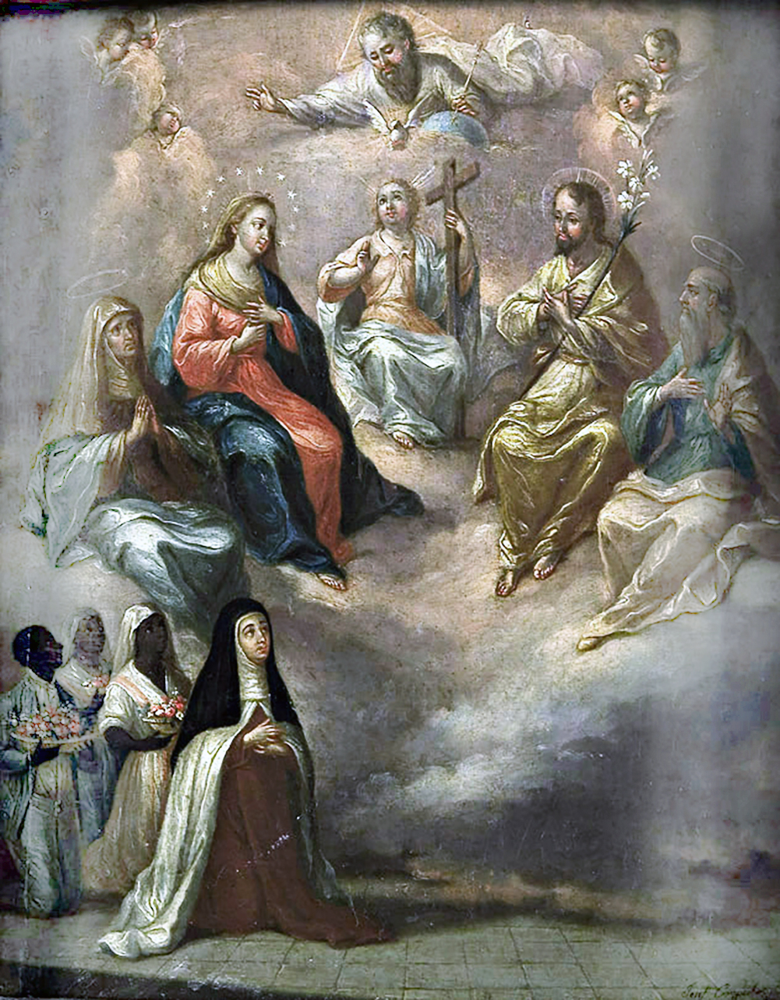
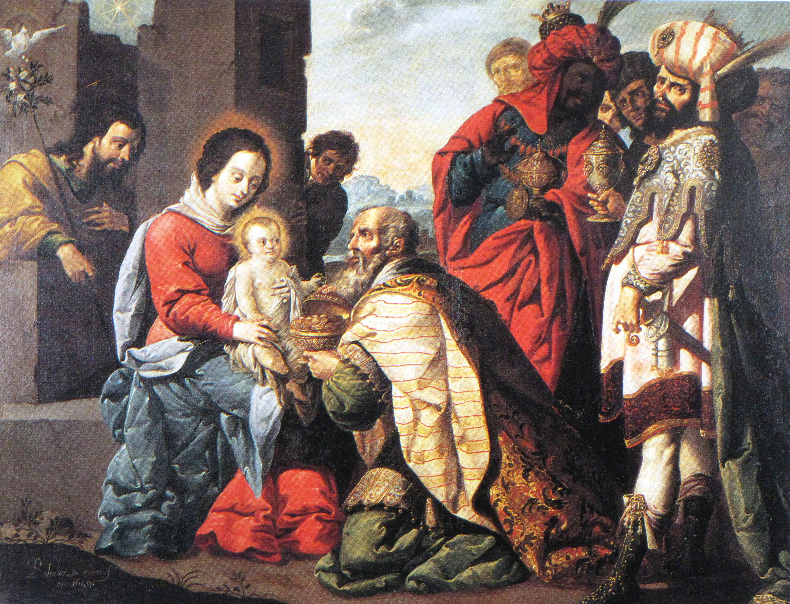
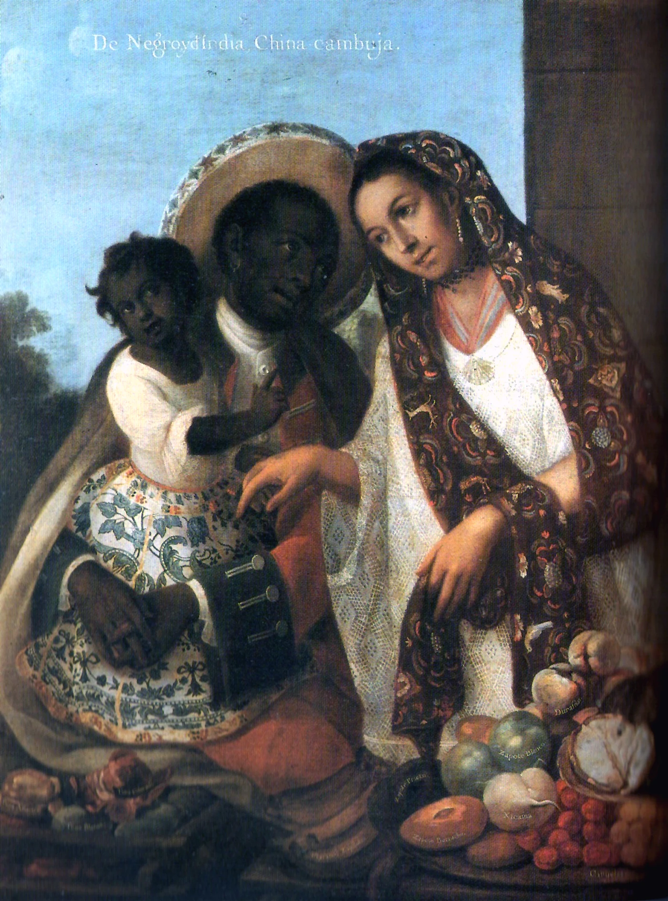
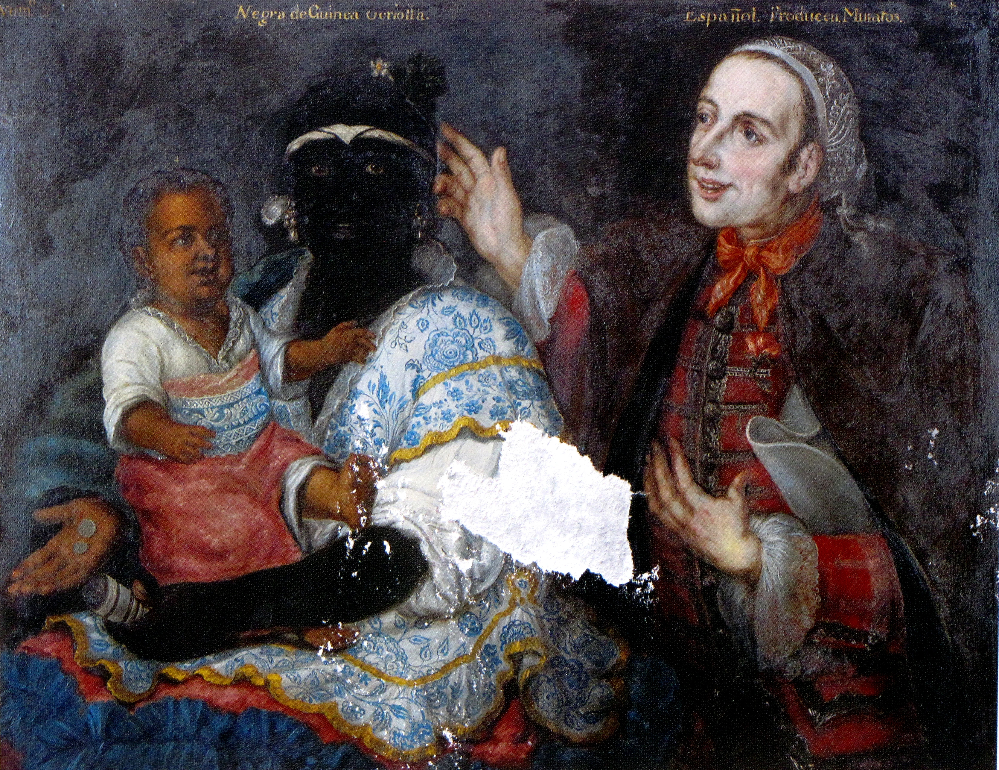
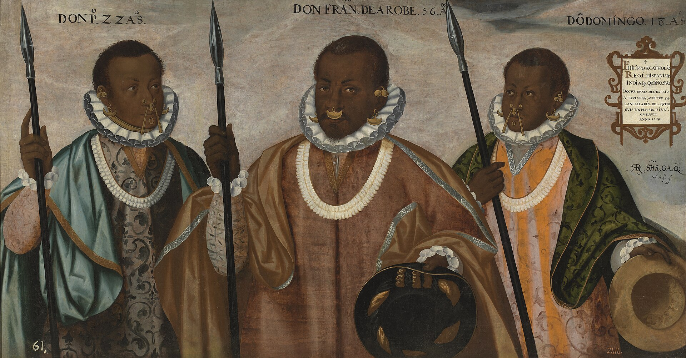
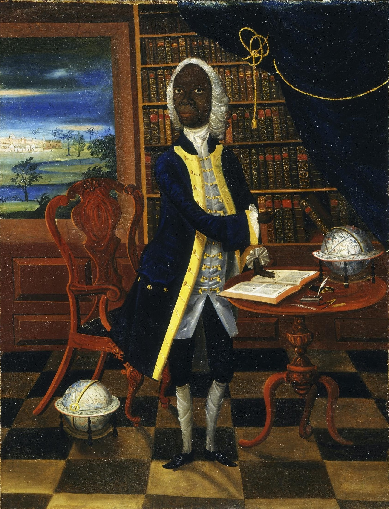

The colonial image as a political battleground. An analysis of material culture, strategies of self-portrayal, and the negotiation of autonomy in the face of the Spanish Crown's ecclesiastical and civil control mechanisms.
Begin the analysis
Religious Painting · Afro-descendant Authorship
José Campeche, the foremost painter of colonial Puerto Rico, was a free pardo — the son of Tomás Campeche, a freed slave and gilder. By signing his works and securing the patronage of successive governors, he defied socio-racial boundaries with every commission.
His caste status did not stop him from becoming San Juan's premier religious painter in the late 18th century, producing devotional works — like this Exvoto of the Holy Family — for the island's churches and colonial elite.
The vibrancy of his color and the delicacy of his compositions are not merely technical mastery: they are an act of occupation of the visual and spiritual space of the very society that stratified him.
Campeche's brush is a tool of autonomy that shows how an Afro-descendant artist could define the visual identity of the very society that subordinated him.
Serving as the trusted painter of five consecutive governors represented a form of royal legitimation. For a free pardo, earning it meant overcoming the racial restrictions that barred access to honorable professions and public recognition.

Religious Painting · Symbolic Majesty
Note the objects held by Balthazar, the Black Magus: a crown, a flowering staff, and the gift of myrrh in a precious vessel. These are not merely decorative; they are among the few instances in colonial religious art where an Afro-descendant figure is granted the full insignia of royal and sacred authority.
The convention of depicting one of the Three Kings as an African monarch allowed painters — and their patrons — to inscribe Black dignity into the very center of the most reproduced devotional scene in Christendom.
By granting Balthazar a crown, courtly garments, and gestures equal to those of the other kings, the composition performs a kind of visual parity rarely extended to Afro-descendant figures elsewhere in colonial art.
Within the sanctioned language of devotion, the Black king could occupy — however briefly — the same visual register as European royalty.
This symbolic elevation echoed a real institution: the religious brotherhoods (cofradías) of Black and mulatto members, which operated as spaces of political and economic autonomy within the colonial order — accumulating capital, manumitting enslaved people, and negotiating directly with colonial authorities.

Secular Scenes · Casta Genealogy
This is not a market scene — it is a domestic family group, and its inscription functions as a legal formula: "De Negro, y de India, China Cambuja." Because enslaved status passed through the mother, unions between enslaved Black men and Indigenous women — who were not enslaved — allowed children to be born free. This family's very existence may record one such strategic alliance, not only a lineage to be classified.
In the foreground, local fruit is rendered with near-scientific precision — prickly pears, bananas, sapodillas, peaches, jicamas, plums, cherimoyas — a taxonomic impulse that mirrors, deliberately or not, the classification of the family above it.
The father wears a redingote — a riding coat, with vest, cape, and hat, in a style linked at the time to servants and military uniforms; it is plausible he worked as a coachman, a common occupation for Afro-descendant men in colonial Mexico City. The mother, by contrast, is dressed as a woman of means: a finely woven huipil, an embroidered rebozo, gold earrings and a necklace. Between them, the daughter wears a long damask skirt in Spanish style, her skin rendered visibly lighter than her father's — the painter's most direct device for making racial mixture legible.
The title names only the formula — "from a Black man and an Indigenous woman, a Cambuja." Everything else — skin tone, fabric, fruit — is where the real argument happens.
Readings of this abundance diverge. One treats the mother's fine dress and the overflowing produce as evidence of genuine prosperity achieved inside the colonial order. A second recalls that casta series like this one were produced largely for export — to show European audiences a reassuring, catalogued image of New Spain's diversity — making this abundance less a transparent social fact than a composition designed to travel abroad.
Even the father's uncertain occupation sits inside that tension: a coat style linked to service work, worn by a man rendered at the same visual scale and dignity as his wife.

Casta Painting · Sumptuary Consumption
Casta painting sought to fix an immovable taxonomic order — sixteen racial categories visually codified — but the genre developed largely to show foreign audiences the diversity of New Spain's population, not to document real attitudes toward it. By the eighteenth century, Mexico had already received roughly 250,000 Africans, including some 80,000 women — more than any other Spanish American territory during the late sixteenth and early seventeenth centuries.
Colonial sumptuary law generally barred Black and mulatta women — enslaved or free — from wearing gold, pearls, or silk. But the law carved out an exception: free Black or mulatta women married to Spaniards were permitted gold earrings set with pearls, a necklace, and limited velvet trim.
This woman is paired with a Spaniard — exactly the condition the exception describes. Her jewelry may not be transgression at all, but the narrow, legally sanctioned case the statute itself anticipated.
Sanctioned or not, Afro-descendant women's dress and bodies were persistently read through a separate colonial lens. Travelers such as Giovanni Francesco Gemelli Careri and the Dominican friar Thomas Gage described Black and mulatta women's clothing through moralizing, racialized assumptions, while colonial legend repeatedly cast the mulata as a bruja — a witch in league with the Devil.
The same ornament that signaled legal status could just as easily be reread as evidence of seduction, excess, or evil — responsibility for that reading placed on the women themselves rather than on the men who looked.

Portraiture · Colonial Political Negotiation
Before this aristocratic portrait, we find one of the most complex testimonies of political negotiation from the 16th century. Don Francisco de Arobe and his sons were Maroon leaders who negotiated peace with the Audiencia of Quito.
Note the visual tension: white lace ruffs (cuellos de encaje) and fine silk doublets from the Spanish court, worn alongside gold circular earrings (zarcillos) and multi-strand pearl necklaces (gargantillas) — adornment conventions drawn from Andean indigenous dress.
These hybrid objects act as insignia of legal and military sovereignty. There is no submission here: it is a visual language of negotiation between equals.
The dark iron-bladed spears each man carries are not decorative weapons: they are instruments of territorial authority, echoed by the cartouche inscription, which records the sitters as baptized, doctrinated, and faithful vassals of the Crown — "Anno 1599."

Individual Portrait · Social Self-Legitimation
Unlike casta paintings, where the subjects are generic types within a taxonomic system, the individual portrait affirms the existence of an autonomous historical subject with a given name, a surname, and psychological individuality.
Examine the objects surrounding him: a terrestrial globe, a celestial globe, a compass, Newton's Principia, and Samuel Johnson's 1755 Dictionary lying open on the table, set against a wall of bound volumes and a checkerboard floor receding in perspective. For a Black man in 18th-century Jamaica, being portrayed as a man of science and letters — a role reserved by racial ideology for Europeans — was an act of radical subversion.
Commissioning a full-length oil portrait — a format reserved for the gentry — surrounded by the instruments of Enlightenment learning was to claim, simultaneously, intellectual authority and legal autonomy as "the Scholar of Jamaica."
The proud posture and the direct gaze at the viewer are the synthesis of this entire tour: a free Black scholar appropriating the colonizer's visual and intellectual tools to self-legitimize as a fully autonomous historical subject.
Not every reading stops there. A counter-reading argues that the figure's total isolation — no teacher, no peer, no community, staged alone among imported objects of learning — risks converting exceptional achievement into a controlled spectacle of colonial exception, the singular case that leaves the racial rule undisturbed.
You have analyzed six stations that show how Afro-descendant people — both free and enslaved — used visual codes, material culture, and corporate spaces to subvert colonial structures, claim status, and inscribe their own agency in the history of Hispanic American art.